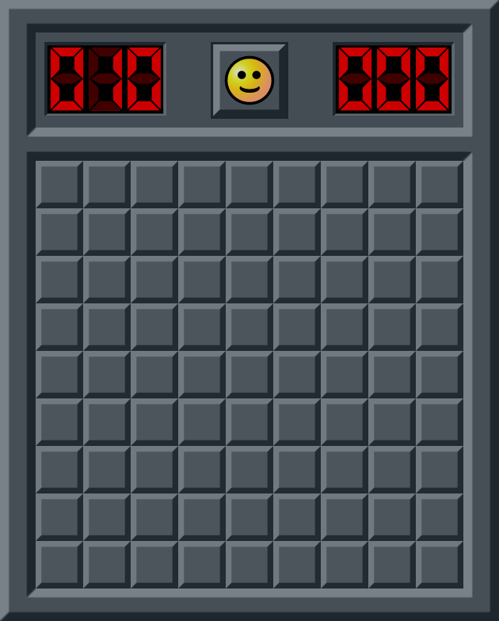

Play Now!
Rules
Minesweeper is a logic-based puzzle game played on a grid of hidden squares. The objective is to uncover all the safe squares without detonating any hidden mines. At the start, players are presented with a covered board, and each square may either conceal a mine or be safe. By clicking on a square, the player reveals its contents:
- If it contains a mine, the game ends immediately.
- If it is safe, a number may appear. This number indicates how many mines are hidden in the eight surrounding squares.
- If a square has no adjacent mines, it will appear blank and automatically reveal nearby safe squares.
Players use these numerical clues to logically deduce the locations of hidden mines. When a player believes a square contains a mine, they can flag it to mark it as dangerous. The game is won when all safe squares are uncovered and all mines are correctly flagged.
Tricks!
1. Learn Common Patterns
Minesweeper is full of recurring number arrangements that always mean the same thing. The most famous is the “1–2–1” line: along an edge, the two squares touching the “2” are always mines, while the ones next to the “1”s are safe. Another useful case is when two “1”s touch the same single covered square—this square must be a mine. Recognizing these small, repeated structures allows you to clear sections instantly, instead of calculating every possibility from scratch. Over time, your brain starts spotting them like words in a text.
2. Use chording to save time and avoid errors.
Chording means clicking directly on a revealed number (usually with both mouse buttons, or a special shortcut) once you have placed the right number of flags around it. The game will then uncover all remaining adjacent squares automatically. This is powerful for two reasons: it removes the need for multiple clicks, and it ensures that if your flags are correct, you cannot trigger a mine by mistake. In fast play, chording becomes the rhythm of the game: flag → chord → scan for new moves. It is both faster and safer than opening squares one by one.
3. Don’t guess too early.
A common mistake is to gamble as soon as you hit a 50/50 situation. Skilled players know that most of the time you can delay that guess. By shifting your attention to another part of the board, you often find a logical deduction that changes the overall constraints. Sometimes clearing just one extra square elsewhere turns a guessing situation into a guaranteed solution. In other words, patience is part of the strategy—Minesweeper rewards methodical thinking over luck.
4. Use edges and corners to your advantage.
Squares on the edges of the grid are easier to analyze because they have fewer possible neighbors. This means the numbers around them are simpler to interpret, and solutions appear more quickly. Corners are especially useful for opening up safe areas early in the game. When you are stuck, scanning the borders often gives you new leads. By combining this with pattern recognition, you can open large safe zones and reduce the risk of blind guesses.
The History of Minesweeper
Minesweeper–style logic games predate Windows by a decade. Early ancestors include Mined-Out (ZX Spectrum, 1983) by Ian Andrew, which already used hidden mines and numerical proximity clues on a grid, and became a modest hit across several 8-bit platforms. A closer predecessor was Relentless Logic (MS-DOS, 1985), a text-graphics minefield puzzle whose “numbers-guide-safe-movement” idea mirrors modern Minesweeper.
Microsoft Minesweeper itself was created by Curt Johnson (originally for IBM OS/2) and ported to Windows by Robert Donner; it first shipped in Microsoft Entertainment Pack 1 (1990) and was later bundled with Windows 3.1 (1992), replacing Reversi and quickly becoming a PC staple. Beyond entertainment, Microsoft also used it to help users practice precise left- and right-clicking with a mouse—a subtle usability tutorial disguised as a game.
The game evolved with Windows: classic WinMine persisted through Windows 7, then in Windows 8 Microsoft removed the built-in version and reissued Microsoft Minesweeper as a free, ad-supported Store app (later with subscription options), adding daily challenges and new themes; this shift drew mixed reactions.